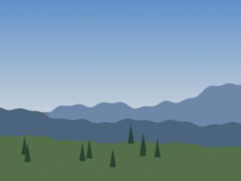

Jun262006
Monday, June 26th, 2006 at 6:40 pm by Beth
We drove up the Trans-Talas Highway to the reservoir at Kyzyl-Adyr this weekend with the Parkers. About fifteen minutes out of town there's a roadside cross, with a small stone beside it, and some withered flowers. Mark slowed down and asked what it was. The Iradi man in the back seat (Parker's driver) didn't say anything for a while. Then he said, "Two years ago. A wedding bus." Five names on the stone.
I didn't know. I had read about it, in the way you read about something that happened to other people. The driver crossed himself and so did Mark. Sam asked why the flowers were fresh. Nobody answered him.
I don't know what to write. We're guests here, and some of the people who gave us soup are the same people who stood on that road with candles. I think that's the whole thing.

The reservoir at Kyzyl-Adyr, an hour later. It was very quiet.
Posted in Out and about | No Comments »
Jun112006
Sunday, June 11th, 2006 at 10:00 pm by Beth
Ninety-five degrees, the A/C broke, Mark was gone for four nights on a job, and Sam got a fever. I was homesick in a way I hadn't been since we landed. I cried in the pantry. I'm not proud of it.
Then, at noon on Friday, Chynara and two of her friends turned up at the door with a pot of soup and no warning at all. "In Irad, the sick child gets soup from the neighbors," she said. We sat on the porch and I didn't have to explain a thing.
Posted in Me | 2 Comments »
May212006
Sunday, May 21st, 2006 at 6:20 pm by Beth
I have a regular fruit man. His name is Rahim ata (ata = father, a polite word for older men). On Sundays after church I stop at his stall and he pretends to compete with the others by lowering his price a little and raising his voice a lot. Apricots are 6 som a kilo, apples 1.8, and he gives Lily one extra "for the road".
Today he asked where I'm from and I said Ohio. He thought for a while and said, "Ohio is a state, like Texas? Texas is good, I know cowboys." I said we have a few. He seemed satisfied.
Posted in Out and about | No Comments »
Apr92006
Sunday, April 9th, 2006 at 8:40 pm by Beth
At the homeschool group the wives are talking about the news. There was some court case about the entry rules, and Mark says the contract talk in the office is different this spring: "maybe a year, maybe two, maybe more, nobody knows". Of course nobody knows. I'm trying not to ask. Lily's school-room art is still on the wall and I'm not taking it down.
Pray for us all, and for the people here. They are our neighbors now.
Posted in Home | No Comments »
Mar212006
Tuesday, March 21st, 2006 at 5:10 pm by Beth
They say it's the spring new year. At the bazaar there were girls selling sprouted wheat in little bowls, and stalls with painted eggs and sweets. Chynara says that it's older than any church, which "the priests don't like to hear". People jumped over small fires in some of the yards near the Old City.
We ate sumalak at a neighbor's yard, a sort of sweet wheat porridge that's cooked all night and stirred by the women taking turns, with songs. It's the best thing I've eaten since we arrived, and I don't know what's in it. I was too embarrassed to ask twice.
The first tulips on the bazaar road.
Posted in Holidays | No Comments »